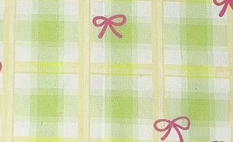
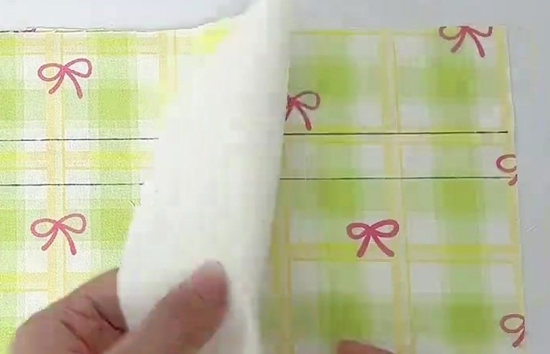
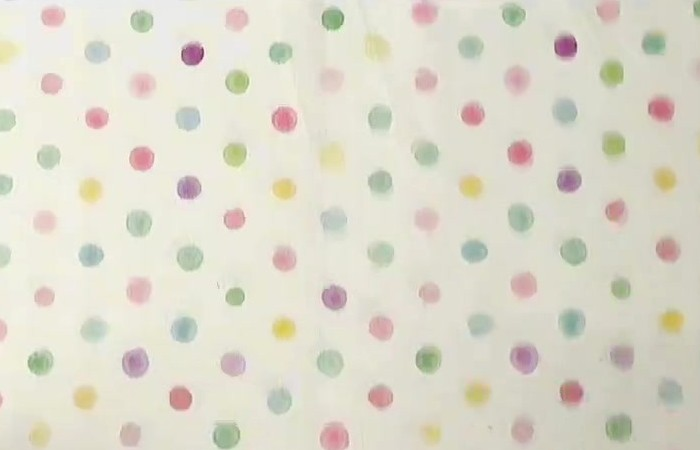

Vải trong video là loại gì?

Video 0:05
Video 0:06
Video 0:13 Video 0:01
Video 0:01
Nên dùng: bảng chọn vải ngoài & vải lót
| Mẫu | Loại vải · cảm giác tay | Dùng cho | Độ dày (gsm) | Ưu (+) / nhược (−) |
|---|---|---|---|---|
| Cotton poplinmịn, mát, hơi giòn tay | Ngoài Lót | 100–130 | + Dễ cắt, dễ ủi, ít trượt, nhiều họa tiết; gần giống vải video nhất. − Dễ nhăn. | |
| Kaki mỏng (cotton twill)thớ chéo, dày dặn, mềm | Ngoài | 150–200 | + Bền, túi đầy đặn hơn. − Chân quai dày: dùng kim 90/14, may chậm. | |
| Kate (poly-cotton)mịn, hơi trơn, ít nhăn | Ngoài Lót | 90–120 | + Rẻ, ít co, ít nhăn, nhiều màu. − Hơi bí; ủi nhiệt vừa kẻo bóng vải. | |
| Cotton pha lanhthô mộc, sợi to nhỏ không đều | Ngoài | 150–200 | + Đẹp tự nhiên, dáng vừa đứng. − Tưa mép nhiều → nên zigzag mép trước khi ráp. | |
| Vải bố mỏng (canvas)chắc, hơi cứng tay | Ngoài | 180–220 | + Rất bền, túi tự đứng. − Miệng nhún ít bèo; chỉ chọn loại ≤ 220 gsm. | |
| Lanh mỏng (linen)mát, hơi thô, rủ | Lót | 100–140 | + Thoáng, nhìn sang. − Dễ nhăn, tưa mép, giá cao hơn cotton. |
gsm = gam/m² (số càng lớn, vải càng dày); tiệm ít ghi gsm → dùng 3 phép thử bên dưới. Lót nên mỏng bằng hoặc mỏng hơn vải ngoài.
Nên tránh ở lần may đầu
- Thun, vải co giãn (cả kaki thun): giãn khi may → đường may gợn sóng, miệng méo.
- Voan, chiffon: mỏng, trơn, xổ sợi nhanh, khó cắt thẳng.
- Satin trơn bóng: 2 lớp trượt lệch khi may, dễ lộ vết kim.
- Vải quá dày (jean dày, nỉ, simili): chân quai có 6 lớp (ngoài + quai 4 lớp + lót) → dễ gãy kim, miệng khó nhún.
3 phép thử nhanh ngay tại tiệm vải
Vò nhàu: nắm chặt góc vải 5 giây rồi thả. Nếp mờ dần → ít nhăn, túi luôn gọn. Nhăn nhúm sâu → phải ủi thường xuyên.
Soi đèn: để tay sau vải, soi lên đèn. Thấy rõ ngón tay → vải mỏng: chọn lót nền nhạt cho khỏi lộ (như video). Chỉ thấy mờ → dày vừa đẹp.
Kéo sợi mép: vuốt nhẹ mép cắt. Sợi tuột dài → vải tưa: zigzag mép sườn + đáy trước khi ráp. Ít tưa → không cần vắt sổ (túi có lót kín).
Xử lý vải trước khi cắt
Giặt & ủi trước khi cắt
Cotton co 2–5% (30 cm hụt 0,6–1,5 cm). Giặt, phơi, ủi (là) phẳng rồi mới cắt.
Canh sợi dọc
Sợi dọc song song biên vải. Đo từ biên tới mép mảnh ở 2 đầu: a = a là thẳng canh.
Nơ đứng thẳng
Xếp cả 2 thân cùng chiều, đầu nơ hướng về miệng túi (cạnh tím).
Keo dựng: tùy chọn
Video không dùng. Muốn túi đứng: ép keo vào mặt trái, chừa 8 cm miệng cho kênh dây mềm, rút êm.